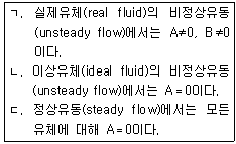
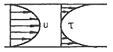
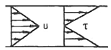
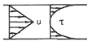
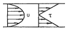
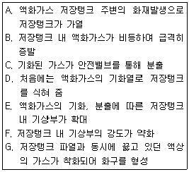
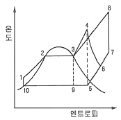
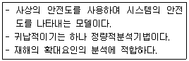
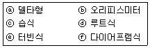

가스기사 (2012-05-20 기출문제)
1과목: 가스유체역학
1. 유량 또는 유속을 측정하는 장치가 아닌 것은?
- 벤튜리미터(venturi meter)
- 피크노미터(pycnometer)
- 로우터미터(rotameter)
- 아네모미터(anemometer)
(정답률: 58%)

2. 유동장 내의 속도(u)와 압력(p)의 시간 변화율을 각각 (∂u)/(∂t)＝A, (∂p)/(∂t)＝B라고 할 때 다음 중 옳은 것을 모두 고르면?

- ㄱ, ㄴ
- ㄱ, ㄷ
- ㄴ, ㄷ
- ㄱ, ㄴ, ㄷ
(정답률: 65%)
3. 2차원 비압축성 유동의 연속방정식을 만족하지 않는 속도 벡터(V)는? (단, i와 j는 각각 직각좌표계에서 x, y 방향의 단위 벡터를 나타낸다.)
- V＝(16y-14x)i＋(14y-9x)j
- V＝6xi＋6yj
- V＝(4x2＋y2)i＋(-8xy)j
- V＝(6xy2＋y2 )i＋(4xy＋5x)j
(정답률: 53%)
4. 뉴턴의 점성법칙을 옳게 나타낸 것은? (단, 전단응력은 τ, 유체속도는 u, 점성계수는 μ, 벽면으로부터의 거리는 y로 나타낸다.)
- τ=(1/μ)·(dy/du)
- τ=μ·(du/dy)
- τ=(1/μ)·(du/dy)
- τ=μ·(dy/du)
(정답률: 81%)
5. 30℃인 공기 중에서의 음속은 몇 m/s인가? (단, 비열비는 1.4이고 기체상수는 287J/kg·K이다.)
- 216
- 241
- 307
- 349
(정답률: 65%)
6. 마찰계수와 마찰저항에 대한 설명으로 옳지 않은 것은?
- 관마찰계수는 레이놀즈수와 상대조도의 함수로 나타낸다.
- 평판상의 층류흐름에서 점성에 의한 마찰계수는 레이놀즈수의 제곱근에 비례한다.
- 원관에서의 층류운동에서 마찰 저항은 유체의 점성계수에 비례한다.
- 원관에서의 완전 난류운동에서 마찰저항은 평균유속의 제곱에 비례한다.
(정답률: 60%)
7. 지름이 0.12m의 관에 유체가 흐르고 있다. 임계레이놀즈수가 2100이고, 이에 대응하는 임계유속이 0.27m/s이다. 이 유체의 동점성 계수는 약 몇 cm2/s인가?
- 0.154
- 0.254
- 0.354
- 0.454
(정답률: 72%)
8. 유체 운동에서 등엔트로피 과정이란?
- 가역등온 과정이다.
- 가역단열 과정이다.
- 마찰이 없는 비가역적 과정이다.
- 수축과 확대 과정이다.
(정답률: 83%)
9. 압축성 이상기체(compressible ideal gas)의 운동을 지배하는 기본 방정식이 아닌 것은?
- 에너지방정식
- 연속방정식
- 차원방정식
- 운동량방정식
(정답률: 78%)
10. 물을 10ton/h의 속도로 높이 5m의 탱크에 같은 굵기의 관을 써서 수송하려고 한다. 유체의 수두손실(head loss)을 무시하고 펌프의 효율을 100%로 하면소요동력(마력수, PS)은?
- 0.1
- 0.185
- 0.317
- 0.5
(정답률: 66%)
11. 밀도가 pkg/m3인 액체가 수평의 축소관을 흐르고 있다. 2지점에서 단면적은 각각 A1, A2[m2]이고, 그 지점에서 압력은 각각 P1, P2[N/m2] 이며 속도는 V1, V2[m/s]일 때 마찰손실이 없다면 압력차(P1- P2)는 얼마인가?
- pV12 [(A1/A2)2-1]/2
- pV22 [(A1/A2)2-1]/2
- pV22 [(A2/A1)2-1]/2
- pV12 [(A2/A1)2-1]
(정답률: 55%)
12. 질량보존의 법칙을 유체유동에 적용한 방정식은?
- 오일러 방정식
- 달시 방정식
- 운동량 방정식
- 연속 방정식
(정답률: 78%)
13. 평행한 두 판 사이를 층류로 흐르는 뉴턴 유체의 유속과 전단응력 분포를 가장 옳게 나타낸 것은? (단, u는 유속, τ는 전단응력이다.)




(정답률: 68%)
14. 수직 충격파가 발생하였을 때의 변화는?
- 압력과 마하수가 증가한다.
- 압력은 증가하고 마하수는 감소한다.
- 압력은 감소하고 마하수는 증가한다.
- 압력과 마하수가 감소한다.
(정답률: 79%)
15. 단면적 0.5m2의 원관 내를 유속 4m/s, 압력 2kgf/cm2로 물이 흐르고 있다. 이 유체의 전수두는? (단, 위치수두는 무시하고 물의 비중량은 1000kgf/m3이다.)
- 10.5m
- 15.4m
- 20.8m
- 25.4m
(정답률: 56%)
16. 유체 수송 시 두손실 계산에 대한 설명으로 틀린 것은?
- 층류영역에서는 Hagen-Poiseuille 식을 사용한다.
- 관부속품에 대하여는 이에 상당하는 직관의 길이를 사용한다.
- 난류영역에서는 마찰계수를 구하여 Fanning 식으로 계산한다.
- 유체 수송 유로의 모양에는 무관하게 계산한다.
(정답률: 72%)
17. 유체의 거동에서 이상유체(ideal fluid)에 대한 설명 중 틀린 것은?
- 비압축성이다.
- 비점성이다.
- 기계적 에너지가 열로 손실된다.
- 마찰력이 없다.
(정답률: 78%)
18. 일반적으로 원관 내부 유동에서 층류만이 일어날 수 있는 레이놀즈수(Reynolds number)의 영역은?
- 2100 이상
- 2100 이하
- 21000 이상
- 21000 이하
(정답률: 85%)
19. 원심펌프 중 회전차 바깥둘레에 안내깃이 없는 펌프는?
- 벌류트 펌프
- 터빈 펌프
- 배인 펌프
- 사류 펌프
(정답률: 67%)
20. 안지름이 10㎝인 원관을 통해 1시간에 10m3의 물을 수송하려고 한다. 이때 물의 평균유속은 약 몇 m/s이어야 하는가?
- 0.0027
- 0.0354
- 0.277
- 0.354
(정답률: 59%)
2과목: 연소공학
21. 다음 중 폭발범위의 하한값이 가장 낮은 것은?
- 메탄
- 아세틸렌
- 부탄
- 일산화탄소
(정답률: 67%)
22. 다음의 단계로 진행되는 폭발현상을 설명한 것은?

- VCE
- BLEVE
- Jet Fire
- Flash Fire
(정답률: 86%)
23. 다음은 간단한 수증기사이클을 나타낸 그림이다. 여기서 랭킨(Rankine) 사이클의 경로를 옳게 나타낸 것은?

- 1 → 2 → 3 → 4 → 5 → 9 → 10 → 1
- 1 → 2 → 3 → 9 → 10 → 1
- 1 → 2 → 3 → 4 → 6 → 5 → 9 → 10 → 1
- 1 → 2 → 3 → 8 → 7 → 5 → 9 → 10 → 1
(정답률: 77%)
24. 가스가 폭발하기 전 발화 또는 착화가 일어날 수 있는 요인으로 가장 거리가 먼 것은?
- 습도
- 조성
- 압력
- 온도
(정답률: 77%)
25. 연소관리에서 연소배기가스를 분석하는 가장 주된 이유는?
- 노내의 압력을 조절하기 위하여
- 연소율을 계산하기 위하여
- 공기비를 계산하기 위하여
- 매연농도의 산출을 위하여
(정답률: 63%)
26. 점화선의 방폭적 격리방법과 가장 관련이 있는 방폭구조는?
- 내압방폭구조
- 특수방폭구조
- 충진방폭구조
- 유입방폭구조
(정답률: 55%)
27. 헬륨과 성분을 모르는 어떤 순수물질의 확산속도를 측정하였더니 헬륨의 확산속도의 1/2 이였다. 이 순수물질은 무엇인가?
- 수소
- 메탄
- 산소
- 프로판
(정답률: 50%)
28. 저위 발열량이 10000kcal/kg인 어떤 연료 1kg을 연소시킨 결과 연소열은 6500kcal/kg이었다. 이 경우의 연소효율은?
- 45%
- 55%
- 65%
- 75%
(정답률: 72%)
29. 연소범위에 대한 설명으로 옳은 것은?
- N2를 가연성가스에 혼합하면 연소범위는 넓어진다.
- CO2를 가연성가스에 혼합하면 연소범위가 넓어진다.
- 가연성가스는 온도가 일정하고 압력이 내려가면 연소 범위가 넓어진다.
- 가연성가스는 온도가 일정하고 압력이 올라가면 연소 범위가 넓어진다.
(정답률: 78%)
30. 연료에 고정 탄소가 많이 함유되어 있을 때 발생되는 현상으로 옳은 것은?
- 매연 발생이 많다.
- 발열량이 높아진다.
- 연소 효과가 나쁘다.
- 열손실을 초래한다.
(정답률: 80%)
31. 압력 0.2MPa, 온도 333K의 공기 2kg이 이상적인 폴리트로픽 과정으로 압축되어 압력 2MPa, 온도 523K로 변화하였을 때 이 과정 동안의 일량은 약 몇 kJ인가?(오류 신고가 접수된 문제입니다. 반드시 정답과 해설을 확인하시기 바랍니다.)
- -447
- -547
- -647
- -667
(정답률: 36%)
32. 대기압에서 1.5m3의 용적을 가진 기체를 동일 온도에서 용적 40L의 용기에 충전한다면 압력은 얼마가 되는가? (단, 대기압은 1atm으로 한다.)
- 35.5atm
- 37.5atm
- 39.5atm
- 41.5atm
(정답률: 65%)
33. 무게 조성으로 프로판 66%, 탄소 24%인 어떤 연료 100g을 완전연소하는데 필요한 이론산소량은 약 몇 g인가? (단 C, O, H의 원자량은 각각 12, 16, 1이다.)
- 256
- 288
- 304
- 320
(정답률: 40%)
34. 석탄을 분석한 결과 휘발분이 35.6%, 회분이 23.2%, 수분이 2.4%일 때 이 석탄의 연료비는?
- 1.03%
- 1.06%
- 1.09%
- 1.14%
(정답률: 39%)
35. 가연성기체를 공기와 같은 조연성기체 중에 분출시켜 연소시키므로 불완전연소에 의한 그을음을 형성하기 쉬운 기체의 연소 형태는?
- 혼합연소(混合燃燒)
- 예혼합연소(豫混合燃燒)
- 혼기연소(混氣燃燒)
- 확산연소(擴散燃燒)
(정답률: 64%)
36. 난류 예혼합화염과 층류 예혼합화염에 대한 특징을 설명 한 것으로 옳지 않은 것은?
- 난류 예혼합화염의 연소속도는 층류 예혼합화염의 수배내지 수십배에 달한다.
- 난류 예혼합화염의 두께는 수 밀리미터에서 수십 밀리미터에 달하는 경우가 있다.
- 난류 예혼합화염은 층류 예혼합화염에 비하여 화염의 휘도가 낮다.
- 난류 예혼합화염의 경우 그 배후에 다량의 미연소분이 잔존한다.
(정답률: 73%)
37. 다음 열역학 제 2법칙에 대한 설명 중 틀린 것은?
- 열은 스스로 저열원에서 고열원으로 이동할 수 없다.
- 일은 열로 만들 수 있고, 만들어진 열은 전량 일로 바꿀 수 있다.
- 제 2종 영구기관을 만드는 것은 불가능하다.
- 전체 우주의 엔트로피는 감소하는 법이 없다.
(정답률: 61%)
38. 다음 [보기]에서 설명하는 가스폭발 위험성 평가 기법은?

- FHA(Fault Hazard Analysis)
- JSA(Job Safety Analysis)
- EVP(Extreme Value Projection)
- ETA(Event Tree Analysis)
(정답률: 77%)
39. 액화천연가스 인수기지에 대하여 위험성평가를 하려고 할 때 절차로 옳은 것은?
- 위험의 인지 → 사고발생 빈도분석 → 사고피해 영향분석 → 위험의 해석 및 판단
- 위험의 인지 → 위험의 해석 및 판단 → 사고발생빈도 분석 → 사고피해 영향분석
- 위험의 해석 및 판단 → 사고발생 빈도분석 → 사고피해 영향분석 → 위험의 인지
- 사고발생 빈도분석 → 사고피해 영향분석 → 위험의 인지 → 위험의 해석 및 판단
(정답률: 66%)
40. 내압방폭구조로 전기기기를 설계할 때 가장 중요하게 고려해야 할 것은?
- 가연성가스의 최소점화에너지
- 가연성가스의 안전간극
- 가연성가스의 연소열
- 가연성가스의 발화열
(정답률: 85%)
3과목: 가스설비
41. 2단 감압방식 조정기의 특징에 대한 설명 중 틀린 것은?
- 장치가 복잡하고 조작이 어렵다.
- 재액화가 발생할 우려가 있다.
- 공급 압력이 안정하다.
- 배관의 지름이 커야 한다.
(정답률: 56%)
42. 수소에 대한 설명으로 틀린 것은?
- 상온에서 강제 중의 탄소와 반응하여 수소취성을 일으킨다.
- 염소와의 혼합 기체에 일광을 쬐면 폭발한다.
- 암모니아 합성의 원료가스이다.
- 열전달율이 크고 열에 대하여 안정하다.
(정답률: 60%)
43. LNG의 용도 중 한냉을 이용하는 방법이 아닌 것은?
- 액화산소, 액화질소의 제조
- 메탄올, 암모니아 제조
- 저온 분쇄
- 해수 담수화
(정답률: 58%)
44. 임펠러의 바깥 둘레에 가이드베인이 없는 펌프로서 토출량이 커서 대용량의 경우에 주로 사용되는 펌프는?
- 플런저 펌프
- 터빈펌프
- 베인펌프
- 볼류트 펌프
(정답률: 70%)
45. 가스 공급설비 설치를 위하여 지반조사 시 최대 토크 또는 모멘트를 구하기 위한 시험은?
- 표준관입시험
- 표준허용시험
- 배인(vane)시험
- 토질시험
(정답률: 69%)
46. 다음 반응과 같은 접촉분해 공정 중에서 카본생성을 억제하는 방법으로 옳은 것은?
- 반응온도를 낮게, 압력을 높게
- 반응온도를 높게, 압력을 낮게
- 반응온도를 높게, 압력을 높게
- 반응온도를 낮게, 압력을 낮게
(정답률: 69%)
47. 기포펌프로서 유량이 0.4m3/min인 물을 흡수면보다 50m 높은 곳으로 양수하여, 공기량 2.1m3/min, 압축기의 소요동력이 15PS 소요되었다고 할 때 기포 펌프의 효율은 약 몇 %인가?
- 19.6
- 25.0
- 29.6
- 35.0
(정답률: 56%)
48. 배관용 조인트(joint)의 분류 방법 중 용접, 납땜 등에 의한 것으로서 가스의 누출에 대한 안전도가 높으며 버트 용접조인트와 소켓 용접조인트로 구분되는 조인트 방법은?
- 분해조인트
- 영구조인트
- 신축조인트
- 다방(多方)조인트
(정답률: 58%)
49. 다음 중 수소를 얻을 수 없는 반응은?
- Al＋NaOH＋H2O
- Hg＋HCl
- Na＋H2O
- Zn＋H2SO4
(정답률: 71%)
50. 액화석유가스 용기충전시설에서 기체에 의한 가스 설비의 내압시험압력은?
- 상용압력의 0.75배 이상
- 상용압력의 1.0배 이상
- 상용압력의 1.25배 이상
- 상용압력의 1.5배 이상
(정답률: 56%)
51. 가스 연소 시 역화(Flash back)의 원인이 아닌 것은?
- 가스 공급량이 지나치게 과다할 때
- 가스 공급 압력이 지나치게 낮을 때
- 버너가 과열되었을 때
- 콕크가 충분하게 열리지 않은 경우
(정답률: 57%)
52. 다음 중 터보식 펌프에 해당되지 않는 것은?
- 원심펌프
- 사류펌프
- 왕복펌프
- 축류펌프
(정답률: 64%)
53. 특정설비 재검사대상으로 맞는 것은?
- 역화방지장치
- 차량에 고정된 탱크
- 자동차용 가스 자동주입기
- 특정고압가스용 실린더 캐비넷
(정답률: 47%)
54. 나프타를 접촉분해법에서 개질온도 7⑤℃의 조건에서 개질압력을 1기압보다 높일 때의 가스의 조성변화는?(오류 신고가 접수된 문제입니다. 반드시 정답과 해설을 확인하시기 바랍니다.)(오류 신고가 접수된 문제입니다. 반드시 정답과 해설을 확인하시기 바랍니다.)
- 가스의 조성은 H2와 CO가 증가하고 CH4와 CO2가 감소한다.
- 가스의 조성은 H2와 CO가 증가하고 CH4와 CO2가 증가한다.
- 가스의 조성은 H2와 CO2가 증가하고 CH4와 CO가 증가한다.
- 가스의 조성은 CH4와 CO가 증가하고 H2와 CO2가 감소한다.
(정답률: 42%)
55. 다음 금속재료에 대한 설명으로 틀린 것은?
- 강에 P(인)의 함유량이 많으면 신율, 충격치는 저하된다.
- 18% Cr, 8% Ni을 함유한 강을 18-8스테인리스강이라 한다.
- 금속가공 중에 생긴 잔류응력 제거에는 열처리를 한다.
- 구리와 주석이 합금은 황동이고, 구리와 아연의 합금은 청동이다.
(정답률: 83%)
56. 탱크로리에서 저장탱크로 LP가스를 이입할 때의 방법이 아닌 것은?
- 비중차에 의한 방법
- 탱크의 자체 압력에 의한 방법
- 액송 펌프에 의한 방법
- 압축기에 의한 방법
(정답률: 61%)
57. 원심압축기의 특징이 아닌 것은?
- 용량조정이 어렵다.
- 윤활유가 불필요하다.
- 설치면적이 적다.
- 압축이 단속적이다.
(정답률: 52%)
58. 터보형 압축기에 대한 설명으로 옳지 않은 것은?
- 연속 토출로 액동현상이 적다.
- 설치면적이 크고, 효율이 높다.
- 운전 중 서징현상에 주의해야 한다.
- 윤활유가 필요 없어 기체에 기름의 혼입이 적다.
(정답률: 56%)
59. 내경이 492.2㎜이고 외경이 508.0㎜인 배관을 맞대기 용접하는 경우 평행한 용접이음매의 간격은 얼마로 하여야 하는가?
- 75㎜
- 95㎜
- 115㎜
- 135㎜
(정답률: 46%)
60. 가스와 공기의 열전도도가 다른 특성을 이용하는 가스 검지기는?
- 서머스태트식 가스검지기
- 적외선식 가스검지기
- 수소염 이온화식 가스검지기
- 접촉연소식 가스검지기
(정답률: 65%)
4과목: 가스안전관리
61. 고압가스용 이음매 없는 용기에서 부식도장을 실시하기 전에 도장효과를 향상시키기 위한 전처리방법이 아닌 것은?
- 산세척
- 쇼트브라스팅
- 마블링
- 에칭프라이머
(정답률: 70%)
62. 액화석유가스에 첨가하는 냄새가 나는 물질의 측정방법이 아닌 것은?
- 오더미터법
- 엣지법
- 주사기법
- 냄새주머니법
(정답률: 72%)
63. 니켈(Ni) 금속을 포함하고 있는 촉매를 사용하는 공정에서 주로 발생할 수 있는 맹독성 가스는?
- 산화니켈(Nio)
- 니켈카르보닐[Ni(CO)4]
- 니켈클로라이드(NiCl2)
- 니켈염
(정답률: 79%)
64. 탱크 내 작업을 하기 위하여 탱크 내 가스 치환, 세정, 환기 등을 실시하고 다음과 같은 결과를 얻었다. 이때 탱크 내에 들어가 작업하여도 되는 경우는?
- 암모니아 : 1.0%, 공기 : 99.0%
- 산소 : 80.0%, 질소 : 20.0%
- 프로판 : 0.1%, 공기 : 99.9%
- 질소 : 85.0%, 산소 : 15.0%
(정답률: 57%)
65. 용기 각인 시 내압시험압력의 기호와 단위를 옳게 표시한 것은?
- 기호 : TP, 단위 : MPa
- 기호 : TP, 단위 : kg
- 기호 : FP, 단위 : MPa
- 기호 : FP, 단위 : kg
(정답률: 77%)
66. 저장탱크에 의한 액화석유가스사용시설에서 지반조사의 기준에 대한 설명으로 틀린 것은?
- 저장 및 가스설비에 대하여 제 1차 지반조사를 한다.
- 제1차 지반조사방법은 드릴링을 실시하는 것을 원칙으로 한다.
- 지반조사 위치는 저장설비 외면으로부터 10m 이내에서 2곳 이상 실시한다.
- 표준 관입시험은 표준 관입시험 방법에 따라 N 값을 구한다.
(정답률: 74%)
67. 일반도시가스공급시설에 설치된 압력조정기는 매 6개월에 1회 이상 안전점검을 실시한다. 압력조정기의 점검기준으로 틀린 것은?
- 입구압력을 측정하고 입구압력이 명판에 표시된 입구압력 범위 이내인지 여부
- 격납상자 내부에 설치된 압력조정기는 격납상자의 견고한 고정 여부
- 조정기의 몸체와 연결부의 가스누출 유무
- 필터 또는 스트레이너의 청소 및 손상 유무
(정답률: 56%)
68. 압축천연가스충전시설의 고정식자동차충전소 시설기준 중 안전거리에 대한 설명으로 옳은 것은?
- 처리설비·압축가스설비 및 충전설비는 사업소경계까지 20m 이상의 안전거리를 유지한다.
- 저장설비·처리설비·압축가스설비 및 충전설비는 인화성 물질 또는 가연성물질의 저장소로부터 8m 이상의 거리를 유지한다.
- 충전설비는 도로경계까지 10m 이상의 거리를 유지한다.
- 저장설비 압축가스설비 및 충전설비는 철도까지 20m 이상의 거리를 유지한다.
(정답률: 64%)
69. 다음 각 가스의 특징에 대한 설명 중 옳은 것은?
- 염소 자체는 폭발성이나 인화성이 없다.
- 일산화탄소는 산화성이 강하다.
- 황화수소는 갈색의 무취 기체이다.
- 암모니아 가스는 갈색을 띤다.
(정답률: 67%)
70. 흡수식 냉동설비는 발생기를 가열하는 1시간의 입열량이 몇 kcal인 것을 1일의 냉동능력 1ton 으로 보는가?
- 3400
- 5540
- 6640
- 7200
(정답률: 67%)
71. 독성가스를 용기를 이용하여 운반 시 비치하여야 하는 적색기의 규격으로 옳은 것은?
- 빨강색포로 한변의 길이가 30㎝ 이상의 정방향으로 하고 길이가 1.2m 이상의 깃대일 것
- 빨강색포로 한변의 길이가 30㎝ 이상의 정방향으로 하고 길이가 1.5m 이상의 깃대일 것
- 빨강색포로 한변의 길이가 40㎝ 이상의 정방향으로 하고 길이가 1.2m 이상의 깃대일 것
- 빨강색포로 한변의 길이가 40㎝ 이상의 정방향으로 하고 길이가 1.5m 이상의 깃대일 것
(정답률: 53%)
72. 탱크주밸브, 긴급차단장치에 속하는 밸브 그 밖의 중요한 부속품이 돌출된 저장탱크는 그 부속품을 차량의 좌측면이 아닌 곳에 설치한 단단한 조작상자 내에 설치한다. 이 경우 조작상자와 차량의 뒷범퍼와의 수평거리는 얼마 이상 이격하여야 하는가?
- 20㎝
- 30㎝
- 40㎝
- 50㎝
(정답률: 58%)
73. 고압가스안전관리법상 전문교육의 교육대상자가 아닌 자는?
- 안전관리원
- 특정고압가스사용신고시설의 안전관리책임자
- 운반차량운전자
- 검사기관의 기술인력
(정답률: 82%)
74. 프로판가스의 충전용 용기로 주로 사용되는 것은?
- 리벳용기
- 주철용기
- 이음새 없는 용기
- 용접용기
(정답률: 69%)
75. 내용적 40L의 고압용기에 0℃, 100기압의 산소가 충전되어 있다. 이 가스 4kg 을 사용하였다면 전압력은 약 몇 기압이 되겠는가?
- 20
- 30
- 40
- 50
(정답률: 49%)
76. 가연성가스의 검지경보장치 중 전기설비를 방폭구조로 하지 않아도 되는 가연성가스는?
- 아세틸렌
- 프로판
- 브롬화메탄
- 에틸에테르
(정답률: 76%)
77. 안전밸브에 대한 설명으로 틀린 것은?
- 스프링식, 가용전식, 파열판식, 중추식이 있다.
- 가연성가스 저장탱크에는 부압파괴 방지장치인 진공 안전밸브를 설치한다.
- 작동압력은 내압시험압력의 10분의 8 이하로 한다.
- 랩쳐 디스크는 장치 내부의 온도가 비이상적으로 상승할 경우에 대비해 사용된다.
(정답률: 55%)
78. 용기 및 특정설비의 재검사에 대한 기준으로 옳은 것은?
- 15년 미만의 차량에 고정된 탱크는 5년마다 검사를 받아야 한다.
- 저장탱크를 다른 장소로 이동하여 설치한 때에는 3년 후에 재검사를 받아야 한다.
- 15년 미만의 내용적이 10L인 용접용기는 5년마다 검사를 받아야 한다.
- 저장탱크가 없는 곳에 설치된 기화장치는 2년마다 재검사를 받아야 한다.
(정답률: 58%)
79. 저장탱크에 액화석유가스를 충전하려면 가스의 용량이 상용의 온도에서 저장탱크 내용적의 몇 %를 넘지 않아야 하는가?
- 85
- 90
- 95
- 98
(정답률: 77%)
80. 용기에 의한 액화석유가스사용시설 중 사이폰 용기 설치의 기준에 대한 설명으로 옳은 것은?
- 안전밸브가 설치되어 있는 시설에만 사용한다.
- 연소장치가 설치되어 있는 시설에만 사용한다.
- 역류방지밸브가 설치되어 있는 시설에만 사용한다.
- 기화장치가 설치되어 있는 시설에만 사용한다.
(정답률: 54%)
5과목: 가스계측기기
81. 차압식 유량계에 대한 설명으로 틀린 것은?
- 베르누이 정리를 이용하여 유량을 측정한다.
- 오리피스식은 편식오리피스와 복식오리피스가 있다.
- 고속유체의 유속측정에는 플로노즐식이 이용된다.
- 벤투리식은 제작비가 비싸고 교환이 어려운 단점이 있다.
(정답률: 55%)
82. 다음 중 되먹임제어와 관계가 없는 것은?
- 디지털제어
- 정량적제어
- 폐루프제어
- 비교제어
(정답률: 56%)
83. 국제단위계(SI 단위계)(The International System of Unit)의 기본단위가 아닌 것은?
- 길이[m]
- 압력[Pa]
- 시간[s]
- 광도[cd]
(정답률: 80%)
84. 비중이 0.9인 액체가 지름 5㎝인 수평관 속을 매 초 0.2m3의 유량으로 흐를 때 레이놀즈 수는 얼마인가? (단, 액체의 점성계수 μ＝5×10-3kg·s/m2이다.)(오류 신고가 접수된 문제입니다. 반드시 정답과 해설을 확인하시기 바랍니다.)
- 8.73×104
- 9.35×104
- 1.02×105
- 9.18×105
(정답률: 38%)
85. 다음 [보기]의 가스미터 중 실측식으로만 짝지어진 것은?

- ⓒ, ⓔ, ⓕ
- ⓐ, ⓓ, ⓕ
- ⓒ, ⓓ, ⓕ
- ⓐ, ⓑ, ⓔ
(정답률: 66%)
86. 시험지에 의한 가스검지법 중 시험지별 검지가스가 바르지 않게 연결된 것은?
- KI전분지 - NO2
- 염화제일동 착염지 - C2H2
- 염화파라듐지 - CO
- 연당지 - HCN
(정답률: 72%)
87. 헴펠식 가스분석법의 흡수법에 의하여 정량분석이 되지 않는 것은?
- 수소
- 산소
- 이산화탄소
- 중탄화수소
(정답률: 67%)
88. 관성이 있는 측정기의 지나침(over shooting)과 공명현상을 방지하기 위해 취하는 행동은 무엇인가?
- 제동(damping)
- 감시경보(process monitor)
- 동작평형(motion balance)
- 되먹임(feedback)
(정답률: 55%)
89. 부르동관 압력계에 대한 설명으로 틀린 것은?
- 탄성식 압력계이다.
- 암모니아용 압력계에는 Cu 및 Cu 합금의 사용을 금한다.
- 저압용 부르동관의 재질은 니켈강을 사용한다.
- 부르동관의 선단은 압력이 상승하면 팽창하고, 낮아지면 수축한다.
(정답률: 50%)
90. 발열량이 11000kcal/m3이고 가스비중이 0.87인 도시 가스의 웨베지수는?
- 9579
- 11793
- 12644
- 13000
(정답률: 72%)
91. 가스소비량이 1.3kg/h인 가스연소기로 13℃의 물 300L를 43℃로 상승시키는데 필요한 시간은? (단, 가스의 발열량은 12000kcal/kg이며 보일러의 열효율은 65%이다.)
- 23분
- 33분
- 43분
- 53분
(정답률: 26%)
92. 어떤 기체를 가스크로마토그래피로 분석하였더니 지속유량(Retention Volume)이 3mL이고, 지속시간(Retention Time)이 6min 이 되었다면 운반기체의 유속(mL/min)은?
- 0.5
- 2.0
- 5.0
- 18
(정답률: 57%)
93. 대류에 의한 열전달에 있어서의 경막계수를 결정하기 위한 무차원 함수로 관성력과 점성력의 비로 표시되는 것은?
- Nussel수
- Reynolds수
- Prandtl수
- Euler수
(정답률: 71%)
94. 섭씨온도 25℃는 몇 °R인가?
- 77
- 298
- 485
- 537
(정답률: 60%)
95. 연소가스 중 CO와 H2의 분석에 사용되는 가스분석계는?
- 탄산가스계
- 질소가스계
- 미연소가스계
- 수소가스계
(정답률: 59%)
96. 자동조절계의 제어동작에 대한 설명으로 틀린 것은?
- 비례동작에 의한 조작신호의 변화를 적분동작만으로 일어나는데 필요한 시간을 적분시간이라고 한다.
- 조작신호가 동작신호의 미분값에 비례하는 것을 레이트동작(rate action)이라고 한다.
- 매분 당 미분동작에 의한 변화를 비례동작에 의한 변화로 나눈 값을 리셋률이라고 한다.
- 미분동작에 의한 조작신호의 변화가 비례동작에 의한 변화와 같아질 때까지의 시간을 미분시간이라고 한다.
(정답률: 62%)
97. 미리 알고 있는 양과 측정량을 평형시켜 알고 있는 양의 크기로부터 측정량을 알아내는 측정 방법은?
- 편위법
- 영위법
- 치환법
- 보상법
(정답률: 58%)
98. 전자유량계의 특징에 대한 설명 중 틀린 것은?
- 압력손실이 전혀 없다.
- 적절한 라이닝 재질을 선정하면 슬러리나 부식성액체의 측정이 용이하다.
- 응답이 매우 빠르다.
- 기체, 기름 등 도전성이 없는 유체의 측정에 적합하다.
(정답률: 61%)
99. 계측기기 구비조건으로 가장 거리가 먼 것은?
- 정확도가 있고, 견고하고 신뢰할 수 있어야 한다.
- 구조가 단순하고, 취급이 용이하여야 한다.
- 연속적이고 원격지시 기록이 가능하여야 한다.
- 구성은 전자화되고, 기능은 자동화 되어야 한다.
(정답률: 80%)
100. 다음 중 SO2, H2O, CO2에 응답하지 않는 특징을 가지는 검출기는?
- 열전도검출기(TCD)
- 염광광도검출기(FPD)
- 수소불꽃이온검출기(FID)
- 전자포획검출기(ECD)
(정답률: 71%)